1单选难度 ⭐⭐约 5 分钟
某同学要把一个量程为 $200\ \mu\text{A}$、内阻为 $300\ \Omega$ 的小量程电流表，改装成测量范围是 $0\sim 4\ \text{V}$ 的直流电压表。那么（ ）
A. 串联一个阻值为 $200\ \text{k}\Omega$ 的电阻B. 并联一个阻值为 $19.7\ \text{k}\Omega$ 的电阻
C. 改装后的电压表内阻为 $20\ \text{k}\Omega$D. 改装后的电压表内阻为 $19.7\ \text{k}\Omega$
💡 显示答案与解析
【答案】C 【难度】0.85
改装电压表需串联分压电阻：总电阻 $R_{\text{总}}=\dfrac{U}{I_g}=\dfrac{4}{2\times10^{-4}}=2\times10^4\ \Omega=20\ \text{k}\Omega$，故内阻为 $20\ \text{k}\Omega$。
串联电阻 $R=R_{\text{总}}-R_g=20000-300=19700\ \Omega=19.7\ \text{k}\Omega$。故选 C。
2单选难度 ⭐⭐约 6 分钟
某同学设计了如图所示的电路进行电表的改装，将多用电表的选择开关旋转到“直流 500mA”挡作为图中的电流表 A。已知电流表 A 的内阻 $R_A=0.4\ \Omega$，$R_1=R_A$，$R_2=7R_A$。关于改装表的下列说法正确的是（ ）
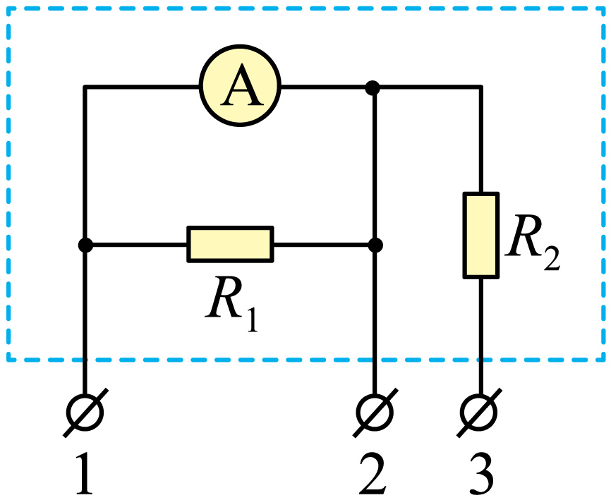
A. 接 1、2 时最大可测电流 $0.5\ \text{A}$B. 接 1、3 时最大可测电压 $3.0\ \text{V}$
C. 接 1、2 时最大可测电流 $2.0\ \text{A}$D. 接 1、3 时最大可测电压 $1.5\ \text{V}$
💡 显示答案与解析
【答案】B 【难度】0.85
接 1、2 时 $R_1$ 与表头并联分流，量程 $I=I_g+\dfrac{I_gR_A}{R_1}=2I_g=1.0\ \text{A}$（$I_g=0.5\ \text{A}$），故 A、C 错。
接 1、3 时 $R_2$ 串联分压，量程 $U=I_gR_A+IR_2=0.5\times0.4+1.0\times7\times0.4=3.0\ \text{V}$，故 B 对、D 错。
3单选难度 ⭐⭐⭐约 6 分钟
有两个量程的电流表，小量程 $0\sim1\ \text{A}$，大量程 $0\sim10\ \text{A}$，表头 G 满偏电流 $I_g=500\ \text{mA}$，定值电阻 $R_1=20\ \Omega$，则 $R_2$ 的阻值为（ ）
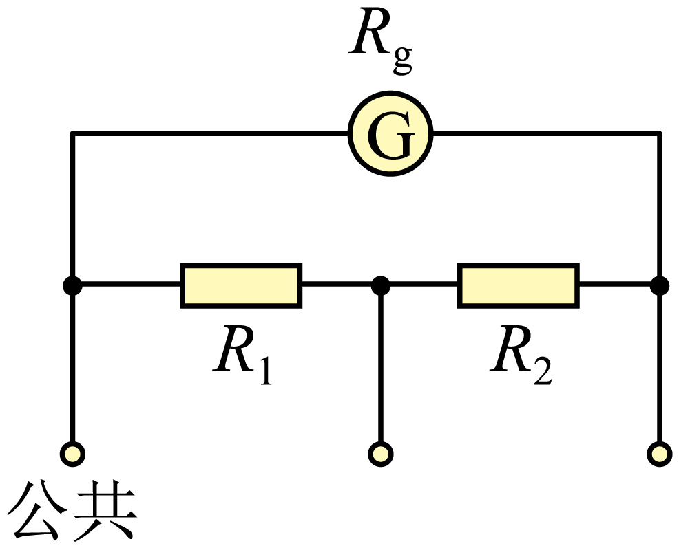
A. $120\ \Omega$B. $150\ \Omega$C. $180\ \Omega$D. $210\ \Omega$
💡 显示答案与解析
【答案】C 【难度】0.65
接公共端与最右端为小量程 $0\sim1\ \text{A}$，表头满偏：$I_gR_g=(I_1-I_g)(R_1+R_2)$。
接公共端与中间为大量程 $0\sim10\ \text{A}$：$I_g(R_g+R_2)=(I_2-I_g)R_1$。联立解得 $R_2=180\ \Omega$。
4单选难度 ⭐⭐⭐约 6 分钟
有两个量程的电压表，用 a、b 时量程 $0\sim10\ \text{V}$，用 a、c 时量程 $0\sim100\ \text{V}$。已知表头内阻 $R_g=500\ \Omega$，满偏电流 $I_g=1\ \text{mA}$，则 $R_1$、$R_2$ 为（ ）
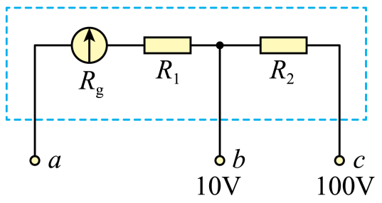
A. $9500\ \Omega$；$90000\ \Omega$B. $90000\ \Omega$；$9500\ \Omega$
C. $9500\ \Omega$；$9000\ \Omega$D. $9000\ \Omega$；$9500\ \Omega$
💡 显示答案与解析
【答案】A 【难度】0.65
$I_g(R_g+R_1)=10\ \text{V}$，$I_g(R_g+R_1+R_2)=100\ \text{V}$。
代入数据：$500+R_1=10000\Rightarrow R_1=9500\ \Omega$；$R_2=90000\ \Omega$。故选 A。
5单选难度 ⭐⭐⭐约 5 分钟
将小量程电流表改装成电压表，校准时发现它的示数总是略大于标准表的示数。下列修改建议正确的是（ ）
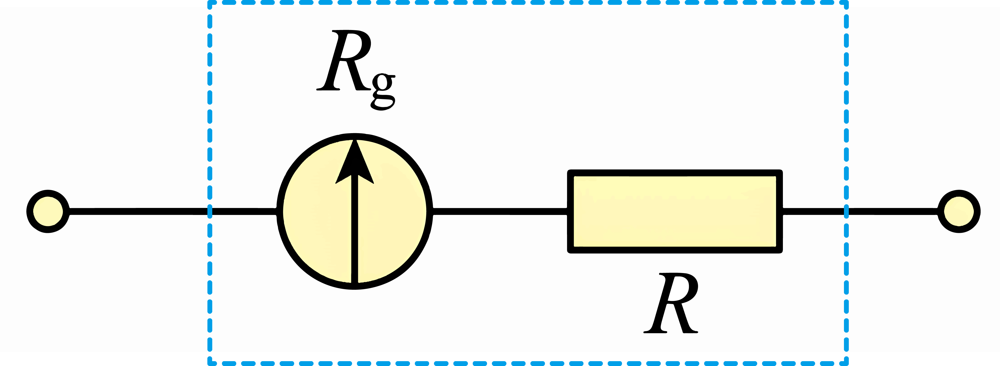
A. 给 $R$ 串联一个适当的大电阻B. 给 $R$ 串联一个适当的小电阻
C. 给 $R$ 并联一个适当的小电阻D. 给 $R$ 并联一个适当的大电阻
💡 显示答案与解析
【答案】B 【难度】0.65
改装表示数偏大 → 相同电压下流过表头电流偏大 → 串联总电阻偏小 → 应稍微增大串联电阻，给 $R$ 串联一个适当的小电阻即可。故选 B。
6填空难度 ⭐⭐约 8 分钟
某同学将满偏电流 $5\ \text{mA}$ 的电流表改装成量程 $2.5\ \text{V}$ 的电压表，内阻测得 $20\ \Omega$。(1) 应串联 $R_1=$ ______ $\Omega$；(2) 校准中标准表 $2.5\ \text{V}$ 时改装表显 $2.4\ \text{V}$，想调准则应在 $R$ 上（ ）A. 并小电阻 B. 并大电阻 C. 串小电阻 D. 串大电阻；(3) 双量程 $10\ \text{V}$ 时在 $R_1$ 上串 $R_2$，接 a、c 对应 $10\ \text{V}$，则 $R_2=$ ______ $\Omega$。
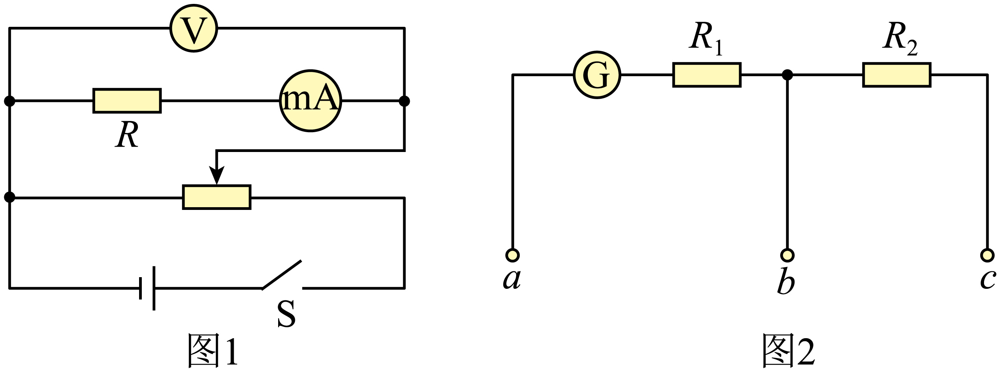
💡 显示答案与解析
【答案】(1) $480$ (2) B (3) $1500$ 【难度】0.76
(1) $R_{\text{总}}=\dfrac{U}{I_g}=\dfrac{2.5}{5\times10^{-3}}=500\ \Omega$，$R_1=500-20=480\ \Omega$。
(2) 示数偏小说明总电阻偏大，需小幅减小，给 $R_1$ 并联一个大电阻（影响小）即可，选 B。
(3) $R'_{\text{总}}=\dfrac{10}{5\times10^{-3}}=2000\ \Omega$，$R_2=2000-(20+480)=1500\ \Omega$。
7填空难度 ⭐⭐⭐约 8 分钟
用 G 表（$I_g=5\ \text{mA}$，欧姆表测得内阻 $100\ \Omega$）改装成量程 $0\sim6\ \text{V}$ 电压表。(1) 需 ______（串/并）联 $R_0=$ ______ $\Omega$；(2) 校准中标准表 $3.66\ \text{V}$ 时改装表头指图乙（$3\ \text{mA}$ 处），则改装表实际量程为 ______ $\text{V}$。
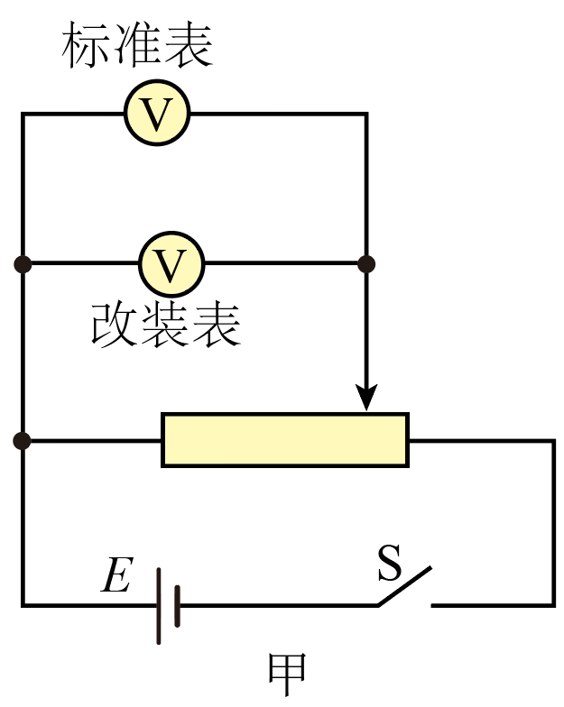
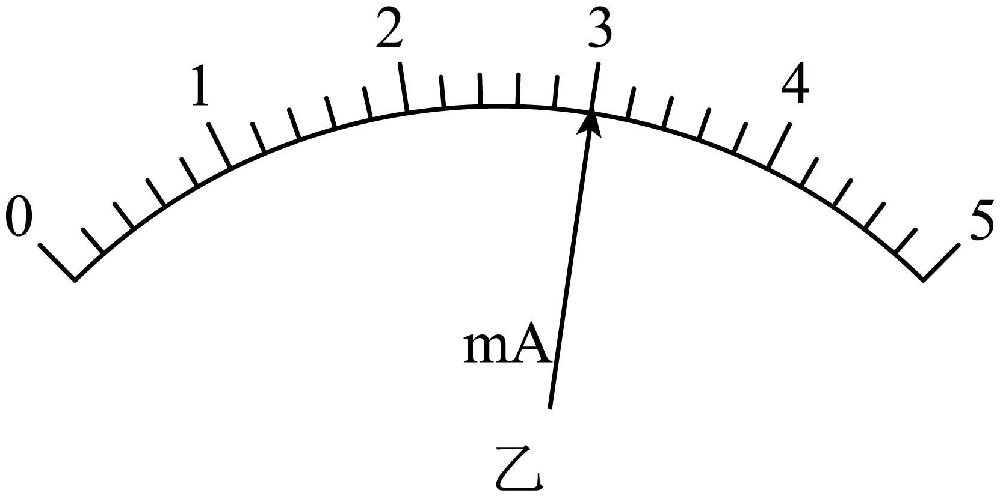
💡 显示答案与解析
【答案】(1) 串联 $1100$ (2) $6.1$ 【难度】0.67
(1) $R_0=\dfrac{U}{I_g}-r_g=\left(\dfrac{6}{5\times10^{-3}}-100\right)=1100\ \Omega$。
(2) 表头示数 $3\ \text{mA}$ 对应实际 $3.66\ \text{V}$，满偏 $5\ \text{mA}$ 对应 $U=\dfrac{5}{3}\times3.66=6.1\ \text{V}$，实际量程 $6.1\ \text{V}$。
8填空难度 ⭐⭐⭐约 10 分钟
将量程 $0\sim3\ \text{mA}$、内阻未知的毫安表 G 改装成 $0\sim30\ \text{mA}$ 电流表 A₁：半偏法测 $R_g$，S₂ 闭合调 $R'$ 使 G 示数 $1\ \text{mA}$ 时 $R'=90.0\ \Omega$。(1) $R_g=$ ______ $\Omega$；(2) 为减小系统误差应（ ）A. 减小 $R$ B. 增大 $R$ C. 选大电动势电源 D. 选小电动势电源；(3) 校准中标准表 $30\ \text{mA}$ 时 G 示数 $2.5\ \text{mA}$，实际量程 ______；(4) 应换电阻为原电阻 ______ 倍。
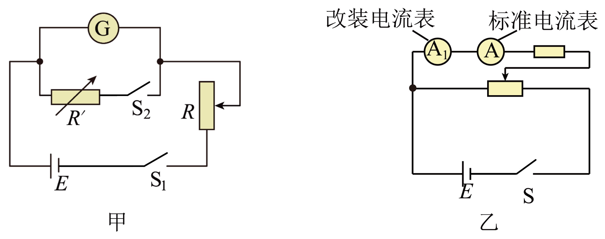
💡 显示答案与解析
【答案】(1) $180$ (2) C (3) $36\ \text{mA}$ (4) $\dfrac{11}{9}$ 【难度】0.65
(1) 并联：$1\ \text{mA}\cdot R_g=(3-1)\ \text{mA}\cdot R'\Rightarrow R_g=180\ \Omega$。
(2) 电源电动势越大，$R$ 可越大，对干路电流影响越小，系统误差越小，选 C。
(3) $\dfrac{2.5}{30}=\dfrac{3}{I_m}\Rightarrow I_m=36\ \text{mA}$。
(4) $(I_m-I_g)R_1=I_gR_g$，$(I_{m0}-I_g)R_2=I_gR_g$，$I_{m0}=30\ \text{mA}$，得 $\dfrac{R_2}{R_1}=\dfrac{11}{9}$。
9填空难度 ⭐⭐⭐约 9 分钟
将满偏 $1\ \text{mA}$、内阻 $300\ \Omega$ 的电流表改装成量程 $10\ \text{V}$ 电压表。(1) 串联 $R=$ ______ $\Omega$；(2) 校准中标准表 $10\ \text{V}$ 时改装表显 $9.9\ \text{V}$，应在定值电阻上（ ）A. 串小 B. 串大 C. 并小 D. 并大；(3) 两电阻 $R_1=10\ \text{k}\Omega$、$R_2=5\ \text{k}\Omega$ 串接 $U=12\ \text{V}$，用校准后电压表 V 测 $R_1$ 电压 $U_1=$ ______ $\text{V}$；测 $R_2$ 得 $U_2$，则 $\dfrac{U_1}{U_2}$ ______ $\dfrac{U'_1}{U'_2}$（大于/等于/小于）。
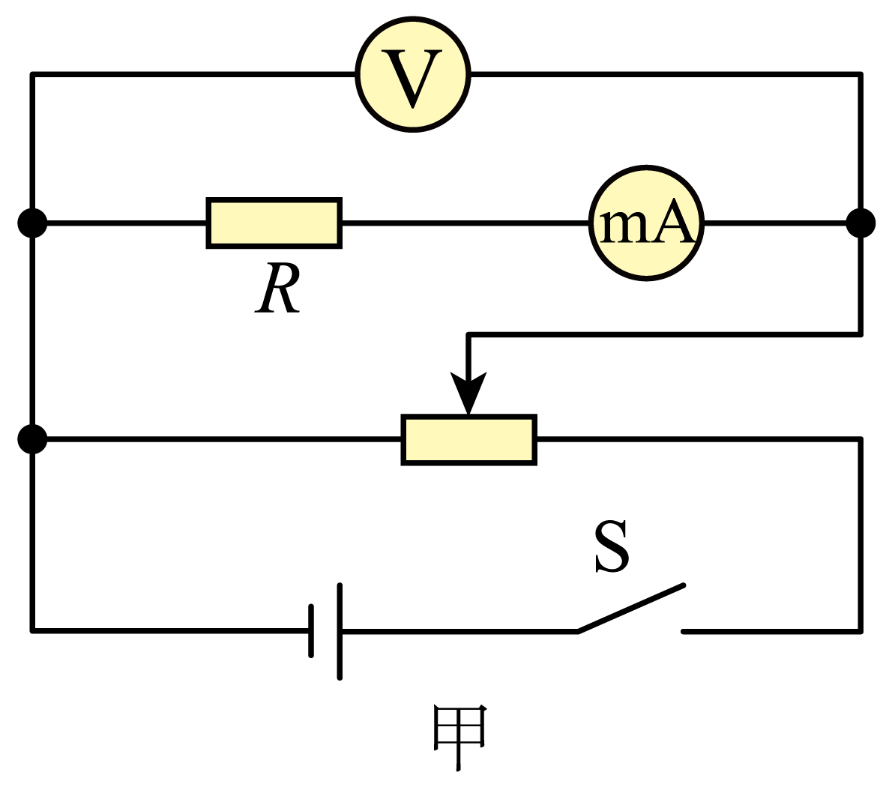
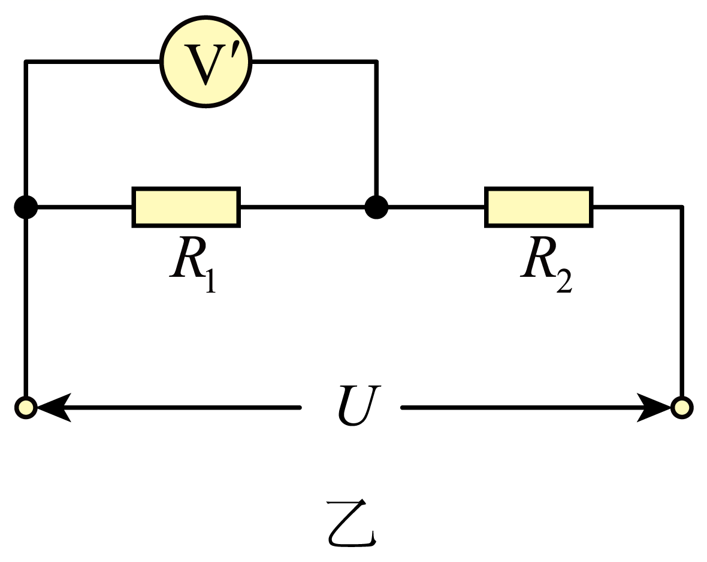
💡 显示答案与解析
【答案】(1) $9700$ (2) D (3) $6$；等于 【难度】0.65
(1) $R=\dfrac{U}{I_g}-R_g=9700\ \Omega$。
(2) 示数偏小说明内阻偏大，应稍减小分压电阻，给其并联一个大电阻，选 D。
(3) 校准后 $R_V=10\ \text{k}\Omega$；测 $R_1$：$R_{V1}=\dfrac{10\times10}{10+10}=5\ \text{k}\Omega$，$U_1=\dfrac{12\times5}{5+5}=6\ \text{V}$；测 $R_2$ 同理 $U_2=3\ \text{V}$；理想值 $U'_1=8\ \text{V}$、$U'_2=4\ \text{V}$，$\dfrac{U_1}{U_2}=\dfrac{U'_1}{U'_2}=2$。
10填空难度 ⭐⭐⭐约 9 分钟
微安表 G（$I_g=300\ \mu\text{A}$）改装成量程 $20\ \text{mA}$ 电流表，用半偏法测内阻后并联阻值 $R$ 的检测中：标准表 $15.0\ \text{mA}$ 时 G 示数 $180\ \mu\text{A}$，则实际量程不是 $20\ \text{mA}$ 而是 ______ $\text{mA}$；(2) 无论测得内阻是否准，只需将 $R$ 换为 $kR$ 即可达预期，$k=$ ______。
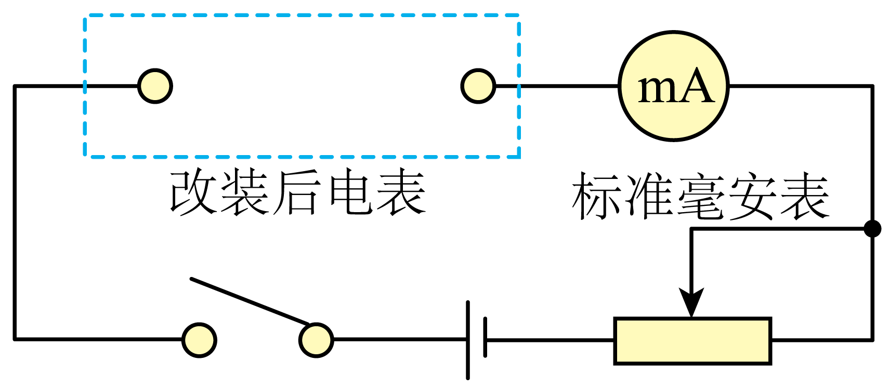
💡 显示答案与解析
【答案】(1) 并联；$25$ (2) $\dfrac{247}{197}$ 【难度】0.65
(1) 并联分流；$R$ 对应量程 $I$：$\dfrac{15}{I}=\dfrac{180}{300}\Rightarrow I=25\ \text{mA}$。
(2) $R=\dfrac{I_gR_g}{25-I_g}$，$kR=\dfrac{I_gR_g}{20-I_g}$，解得 $k=\dfrac{247}{197}$。